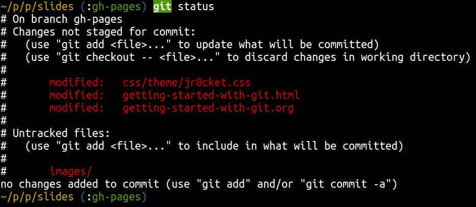

Getting Started with Git & Github
John Stevenson
@jr0cket
Managing code with Git
A distributed approach to source control
Advantages:
- local repository, manage commits off-line
- change sets for more detailed history
- unique commit numbers rather than version numbers
- easy to create branches, easy to throw away too
Git Quickstart Guide

Installing Git
Download Git Client from http://git-scm.com/
Introduce yourself to Git
git config --global user.name "John Stevenson" git config --global user.email "john@jr0cket.co.uk"
Set up some nice aliases
(Optional)
Edit your Git config file: ~/.gitconfig
- add aliases for common commands & options
- add a global ignore file
- use external diff & merge tools
See my .gitconfig file for examples
Creating a local repository
Changes managed as unique data objects in .git folder
- dont delete .git
git init
Git local workflow - overview

Git local workflow - commands
Just need to get familiar with 5 commands to start with
git status git add git diff git commit git log
Git status
Whats going on, what has changes?
git status git status -sb
Git Status example

Git Status example

Git add
Tell git which changes make up the next commit (version)
- refered to as staging or index
; adds everything git add . git add filename.ext git add my-class.java
Working with Staging
Easy to add and remove changes
- nothing has been committed as yet
- gives another level of comparison (diffs)
;; updates files in staging git add . git add filename.ext git add my-class.java git reset --HEAD git reset --HEAD filename.ext git reset --HEAD my-class.java
Git diff
View changes in your files, compared to the last commit
;; show changes made in the working copy git diff ;; show changes made in staging git diff --cache
Git diff - more specifically
Just show the words that have changed
- use the option –word-diff
;; show changes made in the working copy git diff --word-diff ;; show changes made in staging git diff --cache --word-diff
Git commit
Make a new commit (version) with everything in staging
- option -m specifies the commit message (not optinal)
;; commit changes from staging git commit -m "useful commit message" ;; commit changes from all tracked files git commit -am "useful commit message"
Git Log
See all the commits made
- dates of commit
- author of commit
- keep track of branches & forks
Default log view is boring
git log
[[./images/git-log-default.png]
Customise the output to see the history better
git log --oneline --graph --decorate
[[./images/git-log-custom.png]
Drilling deeper into a commit
Show the code that is part of the commit
git show 9690af6
Collaborating with Github
Github == Social Coding
- share your code with others
- keep a backup of your code (if your laptop dies)
Create a Github account (free)
Sign up at: http://github.com
Add a public key to identify yourself
- Github help shows you how generate an SSH key
Github the big picture

Github forking
- View someone elses project on Github
- Fork the project to get your own copy
- Clone your fork and extend the project
Github pull requests
- Commit your changes locally
- push changes to your fork
- click the pull reuest button on Github page
git add . git commit -m "a new feature" git push my-fork branch ;; Go to your repository on Github.com, ;; press the pull request button, add a message
Branching and Merging
git checkout branch-name
Moving things around
git mv filename new-filename
Get Reveal.js and Org-reveal
- Emacs http://www.gnu.org/software/emacs/
- Reveal.js on GitHub:
https://github.com/hakimel/reveal.js - Org-reveal on GitHub:
https://github.com/yjwen/org-reveal